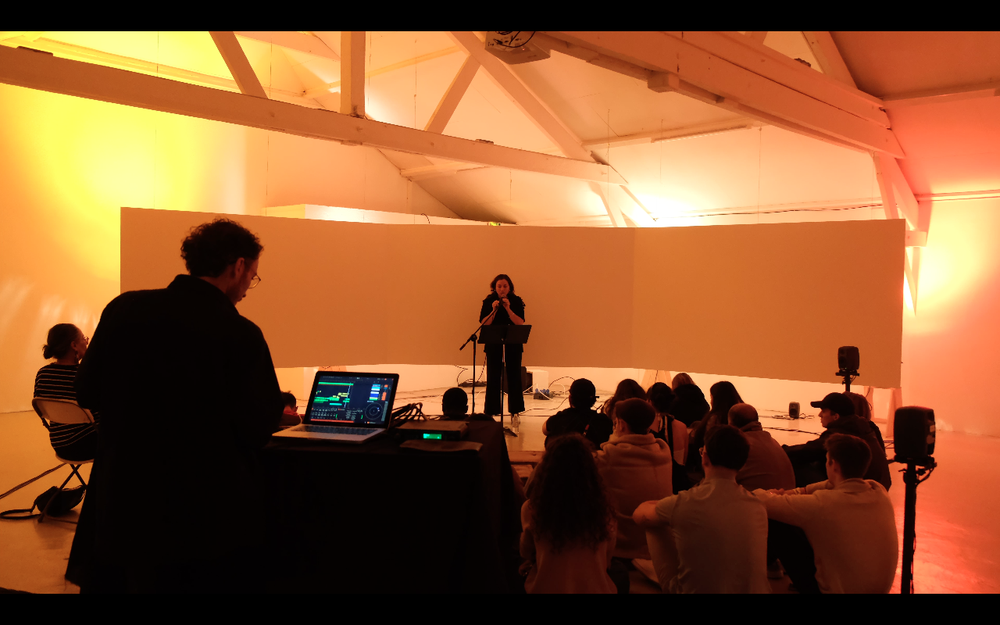
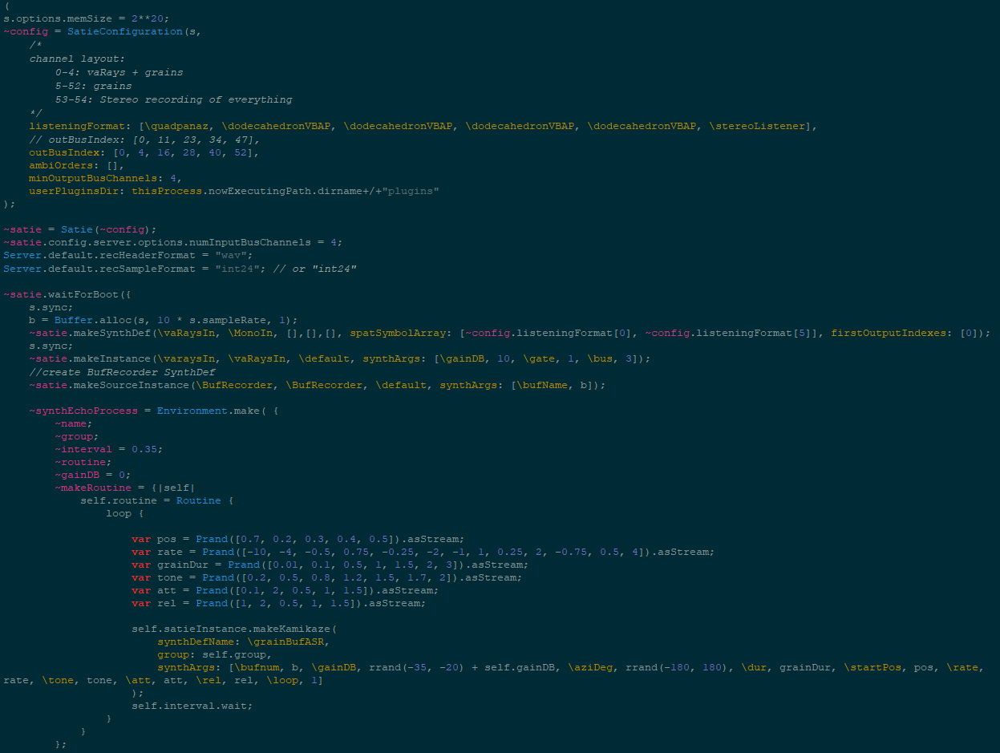

Solace est une trilogie d’oeuvres de l'artiste Maeva Totolehibe, explorant la transformation.
Solace I et II sont des structures en cire réalisée à partir de milliers de bougies collectées dans les paroisses, évoquant la mémoire, l'écoulement du temps et la solastalgie.
Solace III, la collaboration entre Totolehibe et Comby, est un paysage sonore spatialisé, composé d’enregistrements naturalistes et de mutations chimériques, oscillant entre espoir et effondrement.
Dans Solace III, la voix de Totolehibe subit un processus de granulation spatiale en temps réel. Les grains générés voient leur hauteur et leur vitesse modifiées suivant les règles harmoniques classique, puis sont distribués aléatoirement dans l'espace sonore, produisant un effet "chant d'oiseau". L'oeuvre peut-être installée ou performée par les artistes.
Ce processus de granularisation est effectué par un algorithme SuperCollider, baptisé SynthEcho, écrit par Michal Seta et Victor Comby dans le cadre de leurs recherches au Metalab de la Société des Arts Technologiques.

